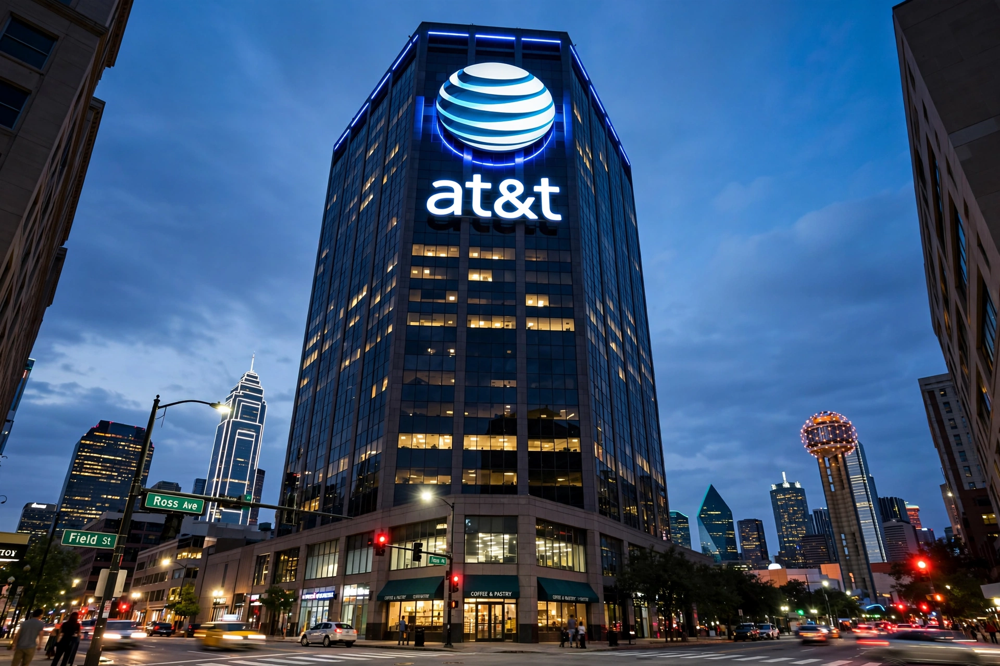

AT&T

| Type | Public (NYSE: T) |
|---|---|
| Industry | Telecommunications |
| Founded | 1983 as Southwestern Bell Corporation (origins 1877–1885) |
| Headquarters | Whitacre Tower, Dallas, Texas |
| Services | Mobile and fixed broadband, fibre, business services |
| Subsidiaries | AT&T Communications; Cricket Wireless |
AT&T Inc. is an American multinational telecommunications holding company headquartered in Dallas, Texas. It is one of the largest telecommunications companies in the world and the largest provider of mobile telephone services in the United States.
History
The name descends from the American Telephone and Telegraph Company, founded in 1885 as the long-distance arm of Alexander Graham Bell's Bell System. For most of the 20th century "Ma Bell" held a government-sanctioned monopoly on U.S. telephone service. In the antitrust settlement of 1982, effective 1 January 1984, the old AT&T divested its local operating companies into seven Regional Bell Operating Companies ("Baby Bells"), keeping long distance and the Bell Labs research arm.
The modern company descends from one of those Baby Bells, Southwestern Bell, which — under CEO Ed Whitacre — acquired several siblings, bought the shrunken original AT&T in 2005 for $16 billion, and adopted its name and globe logo. It then bought BellSouth (2006), DirecTV (2015) and Time Warner (2018, renamed WarnerMedia), before reversing course: WarnerMedia was spun off and merged with Discovery in 2022, returning AT&T to a focus on 5G wireless and fibre broadband.
Services
AT&T provides mobile service to over 100 million U.S. subscribers, operates the FirstNet public-safety network, and has been expanding a fibre-to-the-premises network passing tens of millions of locations.
See also: Bell System · Breakup of the Bell System